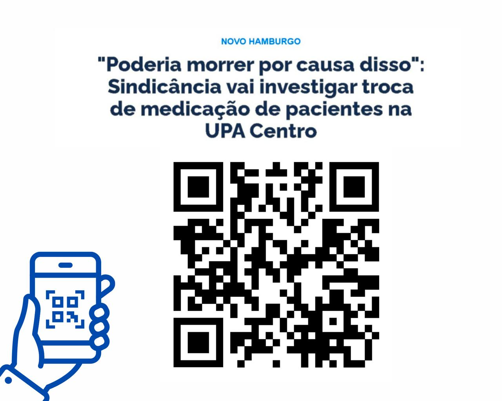
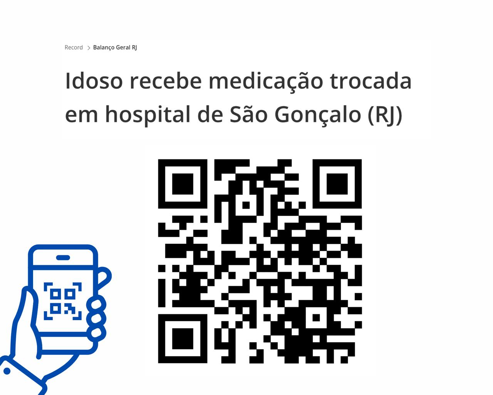

<section id="casos">
    <mat-card>
        <mat-card-title>CASOS PRÁTICOS PARA APRIMORAR SEUS ESTUDOS</mat-card-title>

        <mat-card-content>
            Explore situações reais que evidenciam como a falta da comunicação assertiva afeta diretamente a assistência
            da saúde. Os casos apresentados permitem refletir sobre desafios comuns no ambiente clínico e demonstram, na prática, como a comunicação assertiva pode
            contribuir para a resolução eficiente e humanizada de cada situação.
        </mat-card-content>

        <owl-carousel-o [options]="{items: 1, dots: true, nav: false, loop: true}">
            <ng-template carouselSlide>
                
                <mat-card-content>
                    Vamos praticar!
                </mat-card-content>
            </ng-template>

            <ng-template carouselSlide>
                
                <a href="https://www.abcmais.com/brasil/rio-grande-do-sul/sindicancia-e-instaurada-para-apurar-troca-de-medicacao-de-pacientes-na-upa-centro/"
                    class="carousel-link" target="_blank" rel="noopener">Ver detalhes do caso.</a>
            </ng-template>
            <ng-template carouselSlide>
                
                <a href="https://record.r7.com/cidade-alerta/videos/erro-medico-mulher-morre-apos-cirurgia-do-lado-errado-da-cabeca-14092022/?utm_source=share&utm_medium=share-bar&utm_campaign=r7-topo"
                    class="carousel-link" target="_blank" rel="noopener">Ver detalhes do caso.</a>
            </ng-template>
            <ng-template carouselSlide>
                
                <a href=" https://record.r7.com/balanco-geral-rj/videos/idoso-recebe-medicacao-trocada-em-hospital-de-sao-goncalo-rj-06022023/?utm_source=share&utm_medium=share-bar&utm_campaign=r7-topo"
                    class="carousel-link" target="_blank" rel="noopener">Ver detalhes do caso.</a>
            </ng-template>
        </owl-carousel-o>
    </mat-card>
</section>